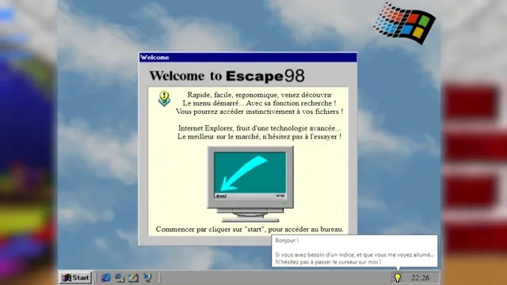

Escape Game
Escape 98

Terminé
Langue :

Début du projet :
03/05/2021
Fin du projet :
20/05/2021
Langages
R Python
T HTML5
U CSS 3
Y (+ Flask)
Equipe
Matthieu FARANDJIS
Plus sur le projet
Présentation
À partir de nos connaissances acquises en Python, HTML et CSS, nous devions utiliser le module FLASK de Python.
FLASK permet de générer des pages web à partir de Python.
Il crée un serveur local permettant l'interaction entre le navigateur internet et le code Python.
Par exemple, grâce à lui, nous pouvons réellement utiliser les formulaires puisque Python peut traiter ces données.
Notre objectif était de faire un escape game.
Le principe est simple, vous devez chercher à accéder à la fin du jeu. C'est un jeu qui demande une certaine réflexion et une certaine logique.
Scénario :
Vous êtes un agent secret envoyé pour pirater le compte administrateur (appartenant à la directrice) d’une organisation malveillante russe.
Suite à un précédent piratage, les précédents agents ont mis la main sur les données personnelles de celle-ci.
Votre organisation anticriminalité « MacroEspion » vous a placé ces données dans une copie de Windows 98,
« Escape 98 ». Votre objectif est donc à partir de ces données, de trouver le mot de passe.
La page de connexion du site est accessible une fois Internet Explorer démarrée.
L’objectif est d’explorer un maximum Escape 98.
Les éléments semblent être inintéressants, pourtant certains risquent d’être très utiles.
Pour vous aider, une petite ampoule en bas à droite peut vous donner des conseils, des astuces, ou encore des informations sur la page où vous êtes.
Note : 20/20.
Remarque :
Bien que le projet met en scène la Russie, il a été construit avant la terrible guerre entre ce pays et l'Ukraine.
Ce projet ne prend en aucun cas parti dans ce conflit et celui-ci ne fait aucunement référence à la réalité.
Que ce soit pour un événement passé, futur, ou au moment de la création du projet.
Ce projet ne suit donc pas l'actualité médiatique, et je ne cherche pas à faire passer un quelconque message.
Merci de votre compréhension.
Pourquoi Escape 98 ?
J'aime beaucoup Windows 9x, et la raison de ce choix est purement personnel.
Windows 95 est le premier système que j'aie manipulé.
Cet OS a été une révolution pour le monde de l'ordinateur.
Beaucoup ont découvert l'ordinateur.
Derrière cette interface simpliste, se cachait des milliards de possibilités.
Si bien que lorsqu'on la découvre, on est un peu perdu...
Et c'est ce que je voulais retranscrire ici !
On est un peu perdu, on ne sait pas quoi faire. Alors on clique un peu partout.
Puis petit à petit, on découvre des choses, on résout des énigmes et on avance.
Puis plus on avance et plus cela nous parait clair...
... Comme l'a été Windows à son arrivé, et je pense particulièrement à la publicité de Windows 3.1.
Il ne suffit pas de passer 10 min à cliquer un peu partout pour arriver à la fin.
Je demande une certaine réflexion, et je vous recommande de prendre des notes si vous souhaitez faire des pauses.
Entre Windows 95 et 98, je préfère 98. C'est pourquoi le projet se nomme "Escape 98" et non "Escape 95".
Lancer le projet
Modules utilisés :
Flask
datetime
Le projet a été créé à l'aide de Spyder (Anaconda) qui est un IDE comportant déjà le module Flask.
Télécharger Anaconda : https://www.anaconda.com/products/distribution
Ouvrez puis exécutez le fichier Windows98.py.
Puis rendez-vous à l'adresse : http://127.0.0.1:5000/
Je recommande Spyder (Anaconda) si vous souhaitez tester le projet sans vous embêter avec l'installation des modules ou de Python.